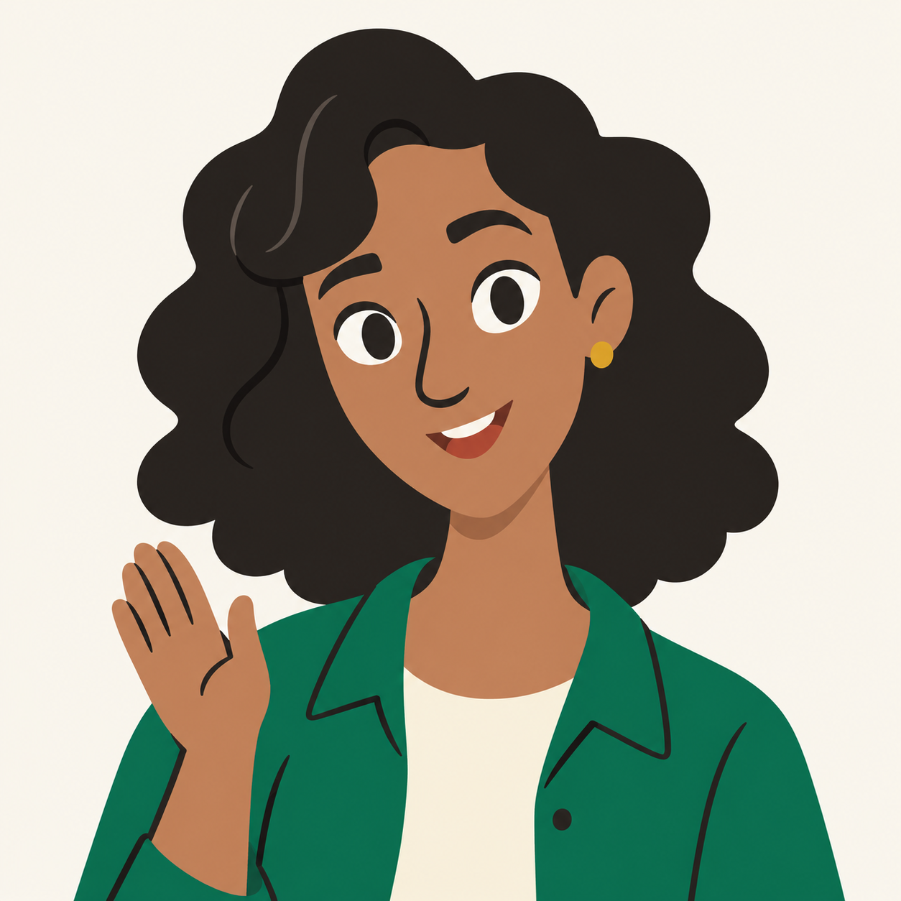
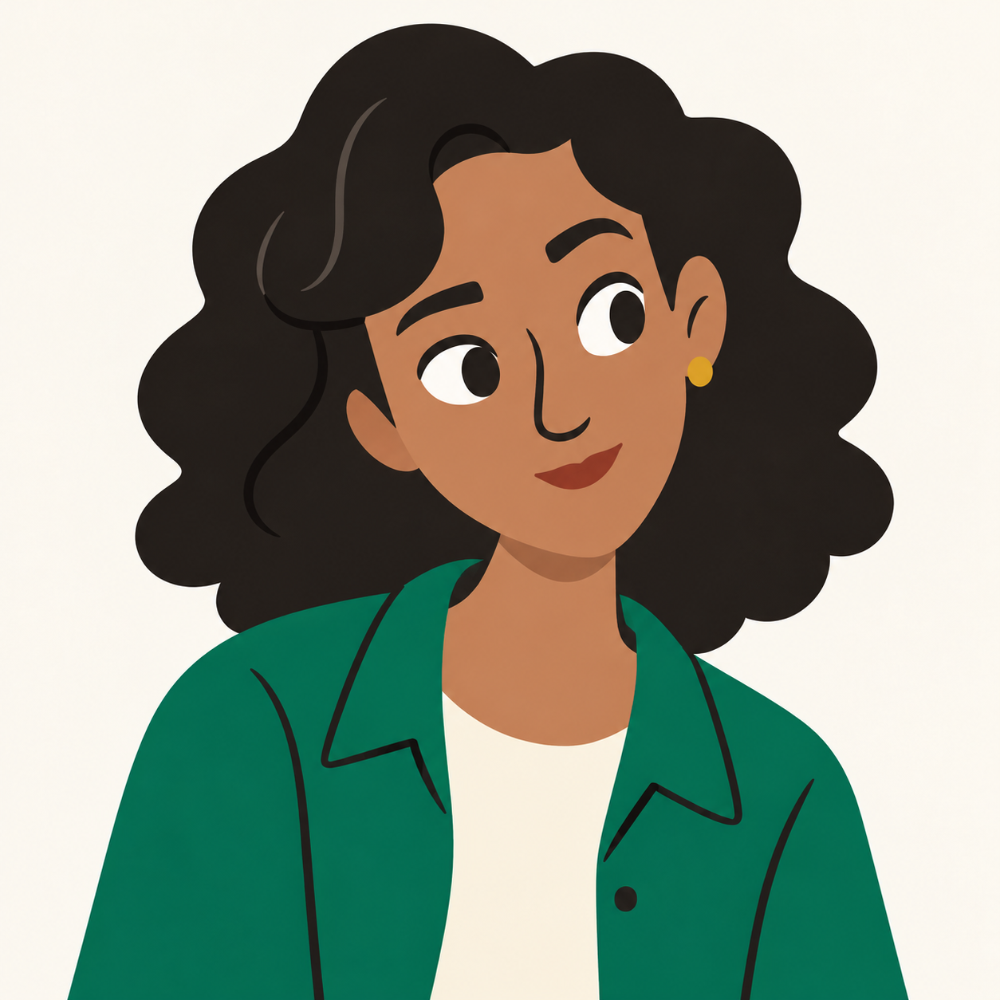
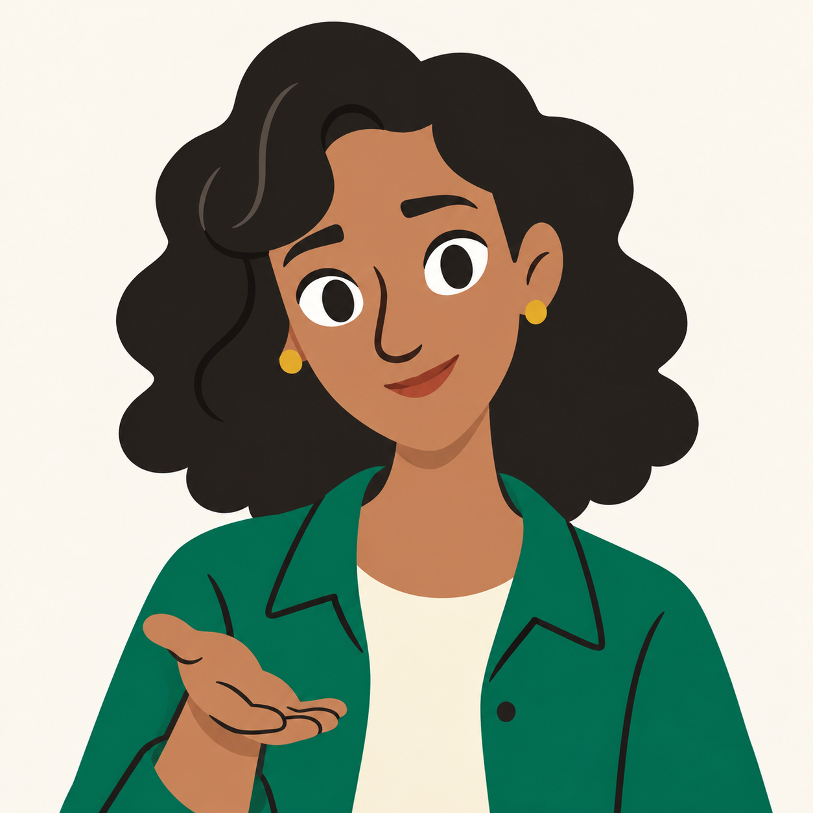
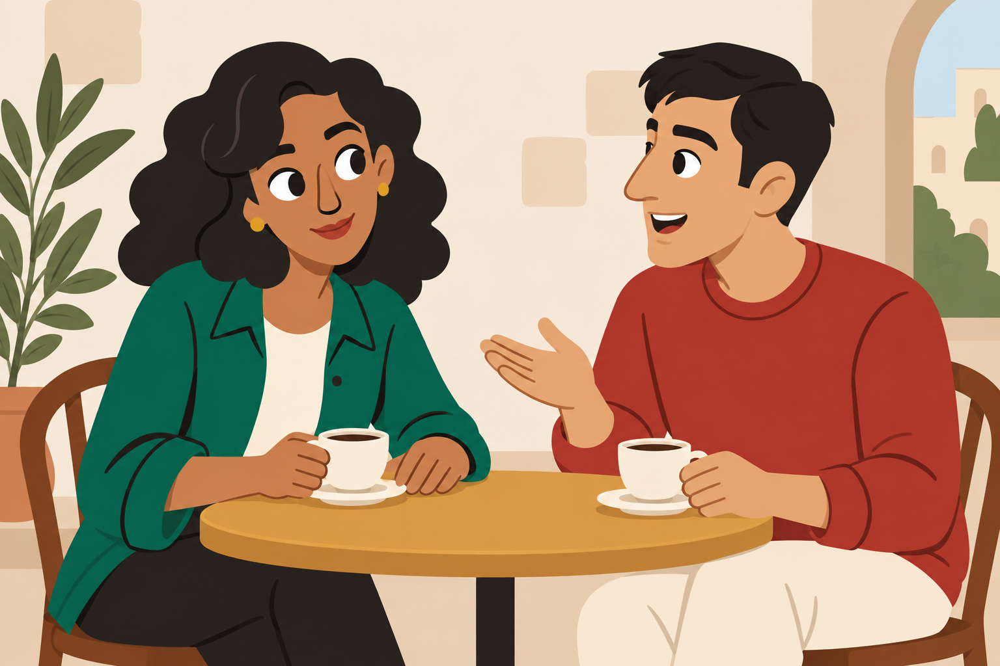
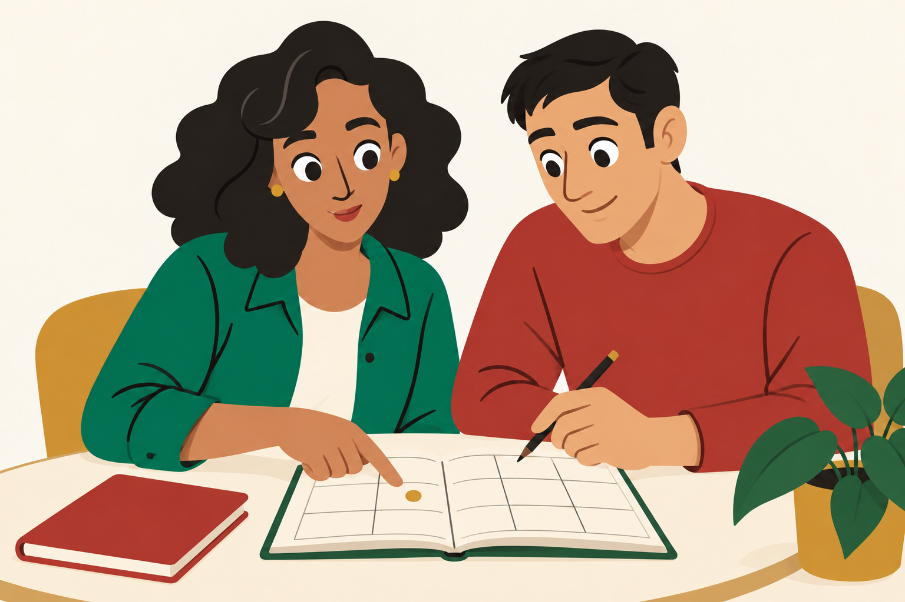

Generated concepts. Selected simple cartoon direction. App graphics unchanged.

Direct gaze / open smile / small hello

Side gaze / closed mouth / forward attention

Direct gaze / quiet smile / low open palm
Small portraits render at their actual 64px and 96px CSS sizes. Use 100% browser zoom.

